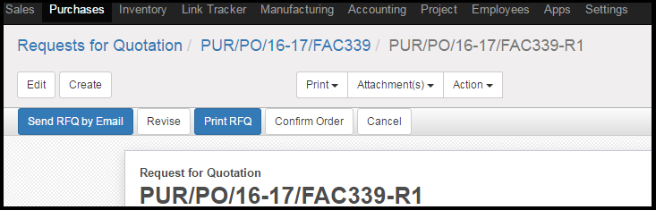

<section class="oe_container">
    <div class="oe_row oe_spaced">
        <div class="oe_span12">
            <h2 class="oe_slogan">Purchase Order Revision</h2>
            <h3 class="oe_slogan">Revise your Requests for Quotation and Purchase Orders</h3>
        </div>
        <div class="oe_span12">
            <div class="oe_demo oe_picture oe_screenshot">
                    
            </div>
        </div>
        <div class="oe_span12">
            <p class="oe_mt32">
This module adds the suffix "-R1"..."-R2"....and so on....to your RFQ's and Purchase Orders.
<p>Adds the "Revise" Button to these orders</p>
            </p>
        </div>
        <div class="oe_span3">
            <div class="oe_demo oe_picture oe_screenshot">
                    
            </div>
<p>michaelsachin@gmail.com</p>
        </div>
    </div>
</section>


